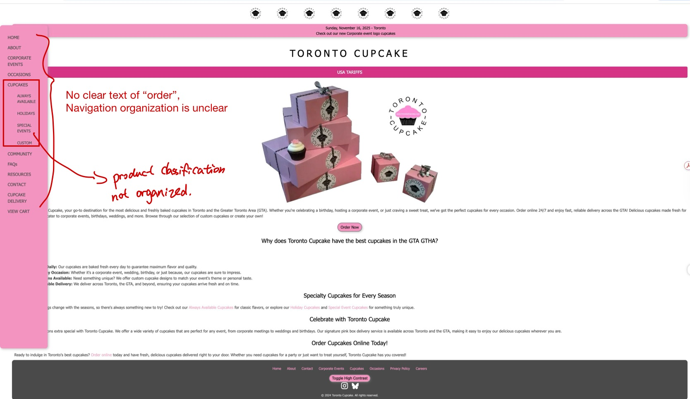
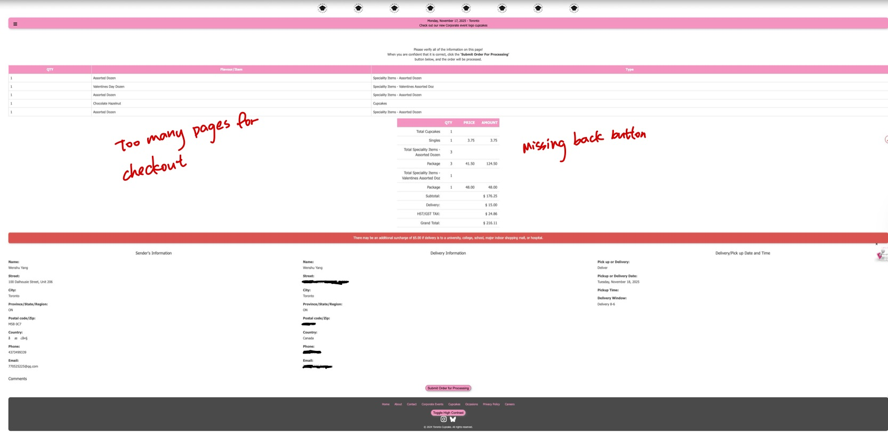

The original website made ordering harder than it needed to be. Key navigation was hidden, product paths were unclear, and checkout actions lacked strong hierarchy.

Toronto Cupcake Redesign
Making cupcake ordering easier to browse, choose, and complete.
A responsive e-commerce redesign focused on improving product discoverability, cart visibility, and checkout clarity for Toronto Cupcake's online ordering experience.
View Interactive Prototype ↓Case Overview
Turning a hard-to-follow ordering path into a clearer e-commerce flow.
Make the shopping path visible from homepage to checkout.
The redesign introduces clearer navigation, product filtering, persistent cart access, cart review, and a simplified checkout form.
Funnel Diagnosis
The largest drop-off happened before checkout.
I used the provided conversion funnel to identify where users were most likely to lose momentum in the ordering process.
Drop-off: -18.5%
Drop-off: -11.2%
Drop-off: -42.7%
Largest drop-offDrop-off: -2.4%
Funnel focus
The main issue was not final payment. The biggest friction appeared when users moved from adding items to initiating checkout, so I focused the redesign on product discovery, cart review, and checkout entry.
Audit Findings
The audit revealed three friction points in the ordering path.
Finding 01
Product path was hard to find.
Evidence The original homepage relied on hidden navigation and weak ordering cues. Decorative elements looked clickable, while the actual ordering path was buried in text and unclear menu organization.
Design implication Make navigation and “Order Now” visible at first glance.
Finding 02
Product browsing lacked shopping feedback.
Evidence The product page lacked filtering, persistent cart access, visible pricing, and clear product details, making it harder for users to compare options and track selections.
Design implication Support browsing with filters, clearer product cards, visible prices, and persistent cart access.
Finding 03
Cart-to-checkout transition was unclear.
Evidence Cart and checkout screens had weak action hierarchy, repeated information fields, unclear page progression, and limited backtracking options.
Design implication Simplify the cart-to-checkout flow, clarify progress, and reduce repeated form entry.
Annotated Original-Site Audit
Six annotated screens show how the original ordering path broke down across homepage entry, product browsing, cart review, and checkout.
Homepage overview

Hidden navigation, weak CTA visibility, clickable-looking decorative logos, and links buried in paragraphs made the ordering path hard to find.
Side navigation

The expanded menu did not clearly label ordering, and product categories were not organized around user shopping needs.
Product browsing

Products lacked filters, visible prices, persistent cart access, and clear details such as ingredients or allergens.
Cart review

Checkout actions were visually weak and poorly positioned, while secondary cart actions created hierarchy problems.
Delivery form

Sender and recipient fields repeated information, and the form structure made checkout feel longer than necessary.
Processing page

The order processing step added another page without clear back navigation, making the checkout flow feel fragmented.
Redesign Strategy
I focused on the moments where users needed clearer direction and control.
Instead of redesigning every page equally, I prioritized the points that shaped whether users could find products, review selections, and move into checkout.
From audit to structure
I used low-fidelity wireframes to reorganize the ordering flow before applying the final visual design.
Audit findings
→
Low-fi wireframes
→
Final UI

Key Improvements
Four changes made the ordering flow easier to follow.

Clearer Homepage Ordering Path
The homepage now gives users a direct “Order Now” path, occasion-based shortcuts, best sellers, and a simple “How It Works” section.

Product Browsing with Filters
The menu page adds keyword search, sorting, and filters for flavour, type, price, and occasion, helping users narrow choices without scrolling through an unstructured list.

Cart Review Before Checkout
The cart page gives users a clear review step with item quantities, order summary, checkout CTA, continue shopping link, and a free-delivery progress reminder.

Simplified Checkout Form
The checkout page groups delivery, sender, recipient, and special instructions into clear sections, with a progress stepper and a same-as-sender checkbox to reduce repeated entry.
Reflection
What this redesign taught me about commerce UX.
What I learned
This project taught me that e-commerce UX is often less about adding new features and more about removing uncertainty. A small missing cue, like an unclear cart entry or weak checkout CTA, can make the whole ordering path feel unreliable.
What I would improve
My redesign focused strongly on structure and clarity, but I would still want to test whether users actually understand the new cart and checkout flow faster. The next step should be task-based usability testing, not more visual polish.
What I would do differently
I would spend more time separating business content from shopping actions. The original site had useful information, but it was buried inside long text and unclear navigation. A stronger IA system would help users decide whether they are browsing cupcakes, ordering for an event, or looking for delivery details.
Prototype
Explore the final Toronto Cupcake ordering flow.
The interactive prototype shows the redesigned path from browsing cupcakes to reviewing the cart and completing delivery details.